一開始只是想研究自動化流程，最後逐步發展成完整的跨平台系統整合專案.....
TradingView 能產生交易訊號，但實際下單平台彼此獨立，兩者無法直接溝通，只能依靠人工操作，不僅效率低，也容易發生錯誤。
我開始思考，是否能建立一套流程，讓兩個原本互不相通的系統，自動交換資料並完成整個交易流程?
為了完成整合，我研究了 TradingView Alert 格式、Capital.com API、Webhook 通訊方式以及 Make 的流程控制，釐清每個系統的資料格式與限制。
最終採用事件驅動（Event-Driven）架構，以 Make 作為流程中介，負責驗證資料、串接 API、控制流程順序，提升整體可靠性與維護性。
建立一套完整且可持續維護的自動化交易流程，從 TradingView 產生交易訊號，經由 Make 負責流程控制、資料處理與訂單狀態管理，最後串接 Capital.com API 完成下單，全流程皆可自動執行，並累積了跨平台系統整合、API 串接與事件驅動架構的實務經驗。
本專案採用事件驅動（Event-Driven）架構，整合 TradingView、Webhook、Make 與 Capital.com API，建構一套具備流程控制、資料驗證、狀態同步及 錯誤處理能力的跨平台自動化交易流程，確保各平台間能穩定協作，並提升系統可靠性與可維護性。
本作品主要展示系統架構設計、跨平台整合、API 串接與除錯歷程，交易策略本身並非本專案重點。
每筆交易訊號皆經過驗證，避免異常資料造成錯誤下單
建立一致的資料格式，讓不同平台能穩定交換資訊
模組化設計，方便後續新增功能與維護
發生異常時仍能安全處理流程，降低錯誤造成的影響
好的系統，不只是能運作， 更要能持續改善前進
持續改善，才能打造可靠的軟體
整個系統採用七層模組化架構，每一層皆負責不同功能，並透過明確的介面彼此串接，滑鼠移至各層即可查看詳細說明
以下依照各項技術在系統中的職責進行說明，而非依品牌分類
負責產生交易條件，並將符合策略的結果轉換成標準化訊號，是整個流程的起點
Pine Script將交易訊號轉換成可傳輸的事件資料，降低訊號產生與後續流程之間的耦合
TradingView Alert透過 HTTP 將資料即時傳送至不同平台，負責跨系統資料交換
Webhook負責整體流程控制、資料驗證、條件判斷與 API 呼叫，是整個系統的核心
Make透過 REST API 完成開倉、平倉及部位查詢，提供穩定且一致的交易介面
Capital.com API使用統一的 JSON 結構，確保各系統皆能正確解析與交換資料
JSON保存每筆持倉資料，供 TP1、TP2 與SL流程查詢，確保交易狀態一致
Data Store將多筆持倉逐一拆分處理，使每筆交易皆能獨立執行與平倉
Iterator完整記錄專案從構想到完成的每個開發階段，每一個里程碑都代表一項功能真正完成，而不只是停留在規劃
點擊各項挑戰，可查看問題分析、解決方式與改善成果
真正的工程能力，不只是完成功能，更重要的是如何分析問題、修正錯誤，並持續提升系統穩定性
修正 TP1 百分比停利換算造成的數量誤差，改為依照實際持倉重新計算可平倉數量，避免超額平倉
取消使用本地快取資料，每次下單前即時查詢 Broker 持倉，避免同步延遲造成判斷錯誤
避免平倉與反向開倉同時送出造成順序錯亂，加入排隊機制，確保訂單依序執行
加入去重機制，避免 TradingView 重複送出相同訊號時造成重複下單
加入完整的 Log 紀錄與事件追蹤，方便快速定位問題來源，大幅提升系統維護效率。
以系統可靠性與整合能力作為成果衡量，而非交易績效
TradingView 發出的警示訊號可透過 Webhook 穩定傳送至後端，並完成 JSON 格式驗證與資料解析
完成登入驗證、開倉、平倉、查詢持倉等 API 串接，並建立完整的錯誤處理流程
完成 TradingView → Webhook → Make → Capital.com 的事件流程，交易訊號可全程自動執行，無需人工介入
加入 Hash 與冪等（Idempotency）檢查，避免 TradingView 重複發送訊號造成重複下單
利用 FIFO 佇列依序處理平倉與反向開倉請求，避免競態條件（Race Condition）造成持倉錯誤
每一個流程節點皆記錄時間、來源、資料內容與執行結果，方便快速追蹤問題並提升除錯效率
展示專案實際開發畫面，包括 API 設定、Make 流程、HTTP 請求、Data Store 以及 TradingView 訊號設定。點擊圖片即可放大檢視
展示 API 金鑰設定，以及 Make 自動化流程的整體架構
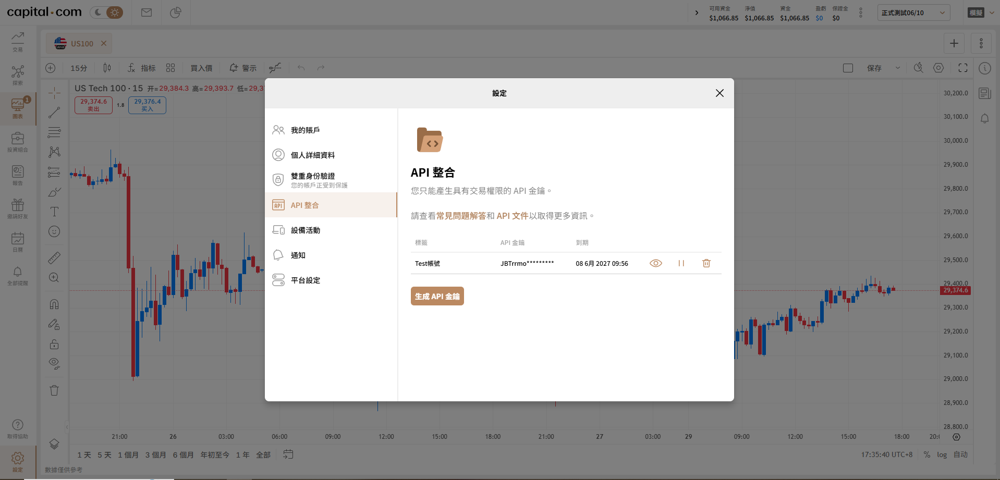
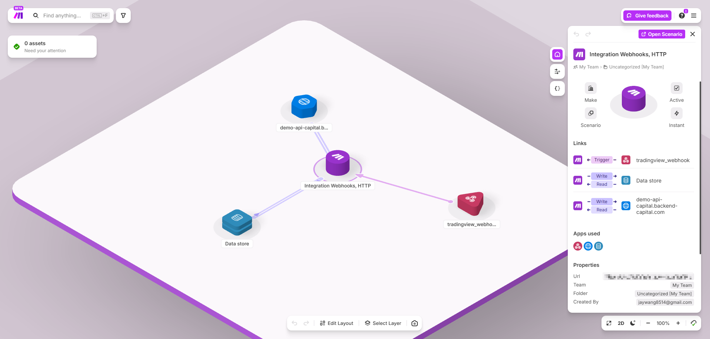
從 TradingView 訊號開始，到建立持倉並寫入資料庫的完整流程
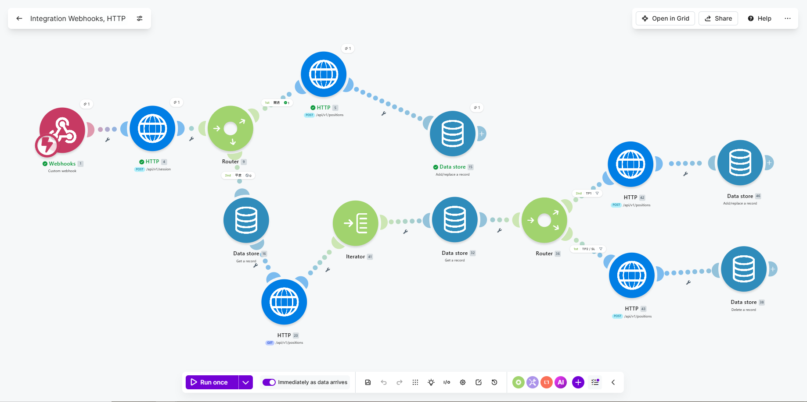
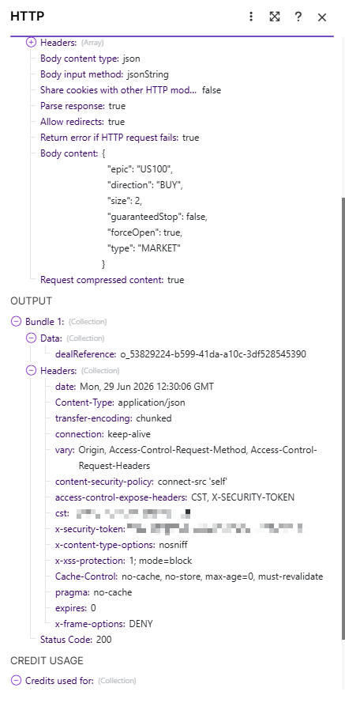
達到第一停利點後，自動平倉部分持倉
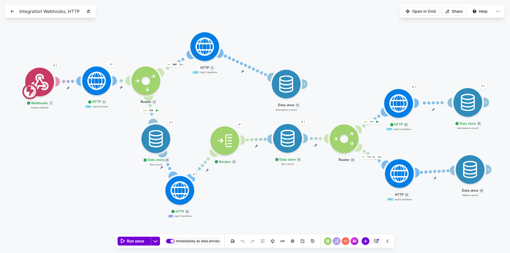
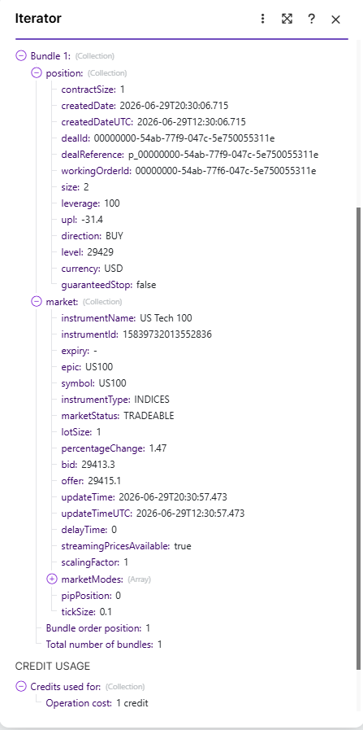
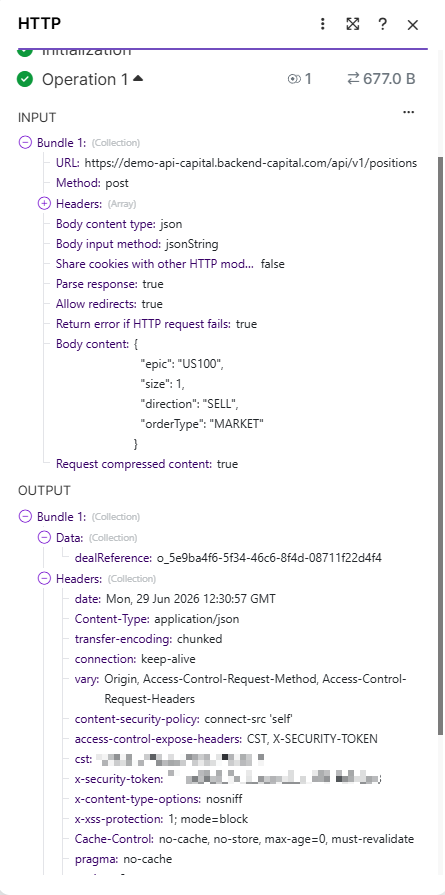
當 TP2 或停損條件成立時，自動完成最終平倉
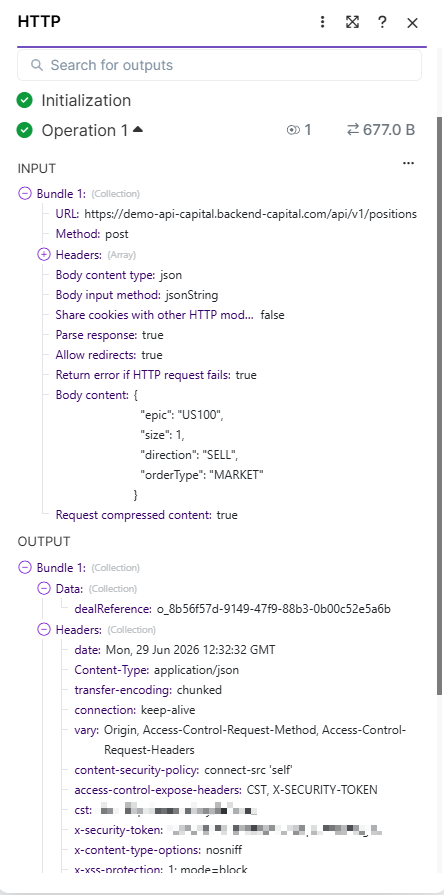
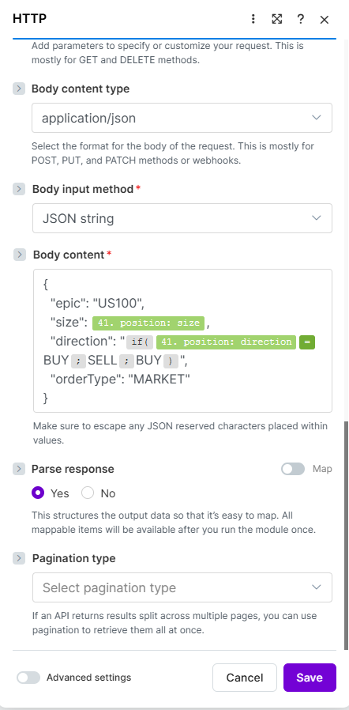
Data Store 所需參數(epic、positionId)
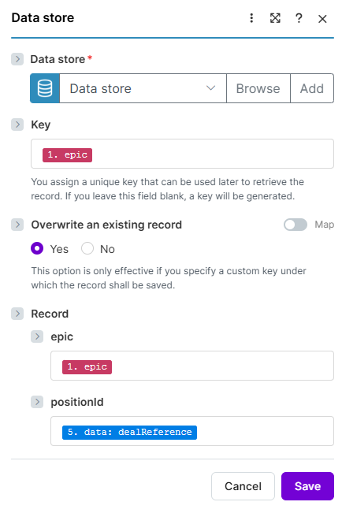
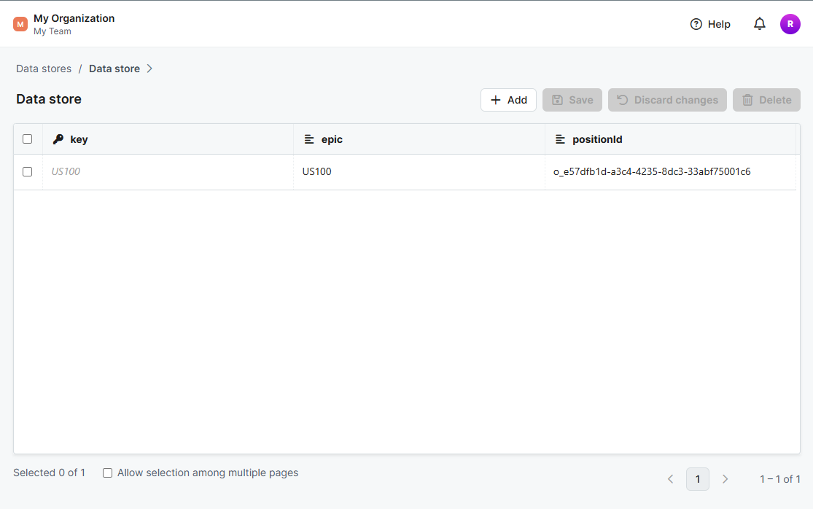
展示 TradingView 警示設定，以及 Pine Script 所產生的 JSON 訊號
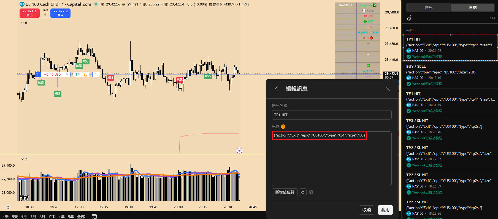
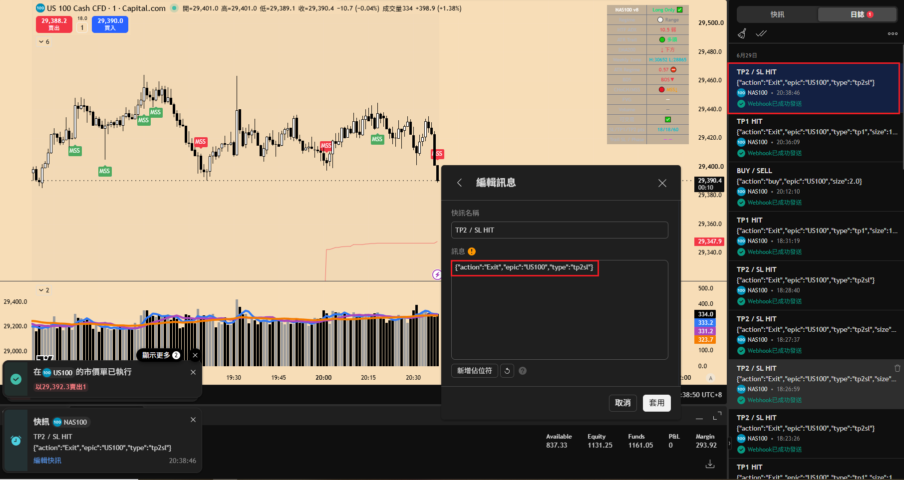
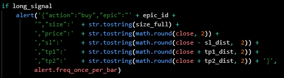
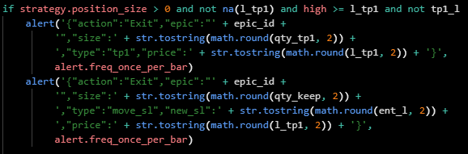
這個專案帶給我的，不只是完成一套自動化流程，更是在一次次除錯、分析與改善中，建立了解決問題的工程思維
將複雜的流程拆解成獨立模組，明確定義每個元件的職責與資料流向，讓系統更容易維護與擴充
熟悉 API 驗證、資料交換與錯誤處理流程，並完成跨平台之間的穩定通訊。
建立系統化的除錯流程，透過重現問題、分析原因、驗證假設與持續修正，提高系統可靠性。
理解跨系統同步的重要性，透過即時資料驗證與同步機制，維持資料一致性。
成功串接多個獨立平台，建立完整的事件驅動自動化流程。
每一次錯誤都是改善系統的機會，也讓自己逐步累積工程判斷與問題解決能力。
這個專案最大的收穫，不是完成一套交易系統，而是在一次次除錯與驗證的過程中，慢慢理解系統整合、API 溝通、事件驅動架構，以及跨平台協作的重要性。
開發過程中，我遇到不少看似相同、實際原因卻完全不同的問題，這也讓我慢慢養成先分析問題、確認原因，慢慢修改程式的習慣，而不是急著嘗試各種修正方式，亂修會出事.....很多時候，真正需要修正的不是程式碼，而是對系統運作流程的理解。
面對問題、拆解問題、驗證問題，並理解出一套屬於自己的知識來解決問題，是我希望帶進每一個開發團隊的工程習慣！
好的軟體不是因為沒有錯誤，而是因為每一次錯誤都讓系統變得更可靠